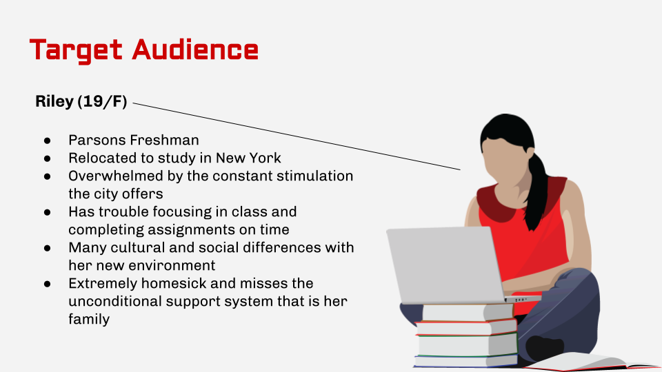
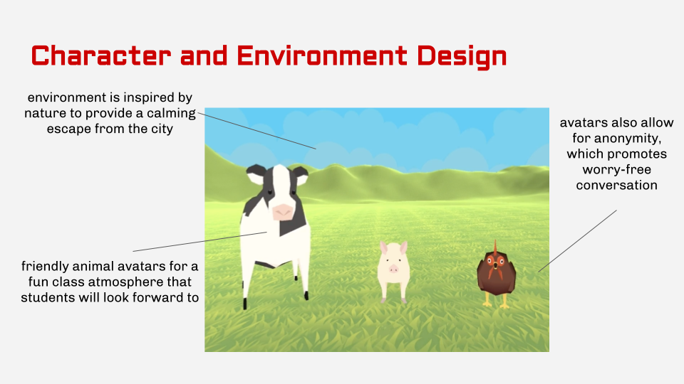

Context
Due to the government's severe defunding of student support facilities at higher education institutes during the past few decades, Parsons School of Design, along with many universities in the country, was forced to close the student
counseling service on campus. Such a decision was inevitable despite the tremendous efforts of the administration and student-faculty organizations, and Parsons is distributing as much information as possible about alternative resources.
However, the need for student counseling service is immense, and the student body's mental wellbeing is at crisis. Anxiety and depression are most commonly cited concerns among college students, and reports about experiences of
severe depression and anxiety have only increased. Reports of suicide attempts have also risen. Subsequently, the number of students using university and college counselling centers has only grown for years. Considering the consistent
increase in the number of students with mental illnesses and the ever-growing demand for appropriate services, it is inevitable that the administration comes up with an alternative before this change severely damages the wellbeing of our
student body.
Proposal
In order to resolve such a crisis in our community, our team sought a way to utilize the high end VR technology that the school has already invested in. Thanks to the generosity of private donors as well as funding from the State of New York
for VR/AR technology and its education, The New School's XREALITY CENTER has continuously grown in size and resources. The equipment center offers rentals of cutting edge VR/AR equipment to all students, and the center's education programs
offer various levels of tutorials for all students. Thanks to its resourcefulness, the center is more than capable of expanding its reach to other departments of the university.
In collaboration with XREALITY CENTER, our team proposes to launch a VR group therapy course open to all students at Parsons. The course will be required for one semester for every student, and in order to improve the general
awareness and importance of mental health in the entire student body, and also to actively support students who experience mental illnesses. Each class is led by an authorized counselor for the entire term, and students are free to drop or
add the course within the general guidelines just like any other courses. The course offers 2 course credits, but does not evaluate the students according to the standards-based grading system. Our team is confident that
User Persona

VR Prototype

Structure
Parsons School of Design' VR Therapy 101 course not only improves the general awareness and importance of mental health, but also actively supports the student body that experiences mental illnesses. Students enrolled in this course will have access to a working VR equipment offered at the university equipment center, register to the online program, and set up an avatar through which they will participate in class. Thanks to the avatar-building option of the software, students will be given as much anonymity as they choose to express themselves in their personas, and the class environment will be a safe place for honest conversations. As long as the students log in to the class on time, they are free to take the class wherever they are, but we encourage the students to stay in a comfortable environment in order to maximize the effects of the class. Each class is led by an authorized counselor for the entire term, and students are free to drop or add the course within the general guidelines just like any other courses. The course offers 2 course credits, but does not evaluate the students according to the standards-based grading system.